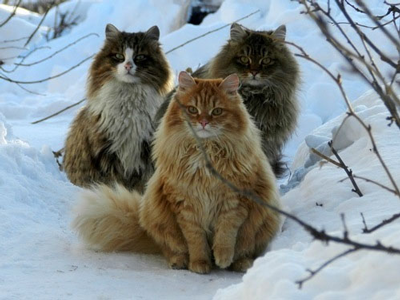

The majestic Siberian is a powerfully built cat with strong hindquarters to help them jump exceptionally high. They are a slow-maturing breed, reaching full magnificence at about 5 years of age. Siberians are large cats with a substantial, rounded body reminiscent of a barrel and heavily-boned legs to support their heavy body structure. Their paws would do a heavyweight boxer proud! But for all their powerful strength, these are gentle cats that enjoy playing and clowning around with their families.
Siberian cats have existed for a long time. The earliest know reference is from 1000AD. In the 1870s, they appeared in the first cat show and we also find a reference to Siberian cats at the 1884 show in Madison Square Gardens. Noted cat fanciers mention them in their books in 1889 (Harrison Weir: Our Cats) and 1898 (John Jennings: Domestic & Fancy Cats) along with the first photo of one in 1900 (Helen Winslow: Concerning Cats). But while we find early references to the early Siberians, there is little documented information about them.
The 1980s saw the rise of the cat fancy in Russia and records began to be kept. Kotofei Cat Club in Moscow created the first standard and used two cats as the model for it: ‘Mars'-a blue lynx point and white-and ‘Roman'-a brown tabby and white. At the 1989 All Union Cat Show, there were twelve Siberians entered. In 1990 Elizabeth Terrll (Starpoint) imported three cats to the USA: ‘Ofelia,' ‘Naina,' and ‘Kaliostro'. In 1997, Dana Osborn (Willowbrook) imported the first colorpoints ‘Ustin El Magrib' of Willowbrook (seal lynx point male) and ‘Roksana Babyan' of Willowbrook (seal tortie point female) and in 1998 the first color point litter was born. TICA accepted them into the New Breed program in 1992 and in 1996 granted them championship status.
Siberians use their incredible intelligence to solve all kinds of problems-like determining to how to open a door to be with the owners they adore, how to get to the cat food for an extra meal, or how to recover the favorite toy their owner thinks they have so cleverly hidden out of reach! They are powerful, agile cats that can leap great distances and heights, sometimes appearing to fly through the air; but, despite their size, they are adept at negotiating obstacles in their path without knocking them over. They love to play and will entertain you with their clown-like antics. They adore their human families and their visitors-with children holding a warm spot in their hearts. They have a wonderful depth to their purr and talk to you with a chirping sound, particularly when they are coming to greet you when you have been out.
While considered a semi-longhair, the Siberian's coat varies with the season. In the winter, it will have a thick, rich, full triple coat that would have protected it from the elements in its native Russia. In the summer, they shed the heavy winter coat for a shorter, less dense coat. They come in a wide variety of colors and patterns, including pointed, with deep, intense colors and rich patterns that make them a dramatic stand out from the everyday cat.
The Siberian is a medium, strong cat with heavy boning and a powerful musculature that takes up to 5 years to reach full maturity. They have rounded contours to the body resembling a barrel and rounded, gentle contours to the modified wedge head. Their large eyes are almost, but not quite, round and will appear rounder when the cat is alert or startled. Their hind legs are slightly longer than their front legs, giving them the powerful lift they need to get to those high places they just have to reach! The overall impression of the mature Siberian is one of balance, circles, and roundness.
The Norwegian Forest Cat is a healthy, robust natural breed that developed over hundreds of years of natural selection in a harsh climate. They are a slow-maturing breed that may take up to five years to reach full maturity. This is a fairly low-maintenance breed, requiring minimal grooming. The Norwegian Forest Cat (or "Wegie") is an interactive, playful, loving member of any household.
The Norwegian Forest Cat's strong, sturdy body and thick coat are testaments to their evolution over the centuries in Scandinavia. They traveled with the Vikings, keeping their ships and villages free of vermin. Referred to as the "Skogkatt", the Norwegian Forest Cat has been included in Viking legend and mythology.
By the 20th century, the Norwegian Forest Cat was becoming a rarity in its native land and was at risk of extinction. Consequently, plans were started to ensure the future of the national cat in the 1930s but WWII interrupted this work. Finally in the 1970s the Norwegians put a special breeding program in place to protect the breed-and the breed received royal recognition when the late King Olaf designated them the official cat of Norway. The first breeding pair was imported into the United States in 1979. The International Cat Association was the first North American registry to grant Championship status to the Norwegian Forest Cat in 1984.
Intelligent and resourceful, the Norwegian Forest Cat is a mild-mannered breed that adapts easily to its environment. They are very interactive cats who enjoy being part of their family environment and love to play with any one who enjoys a game!
The Norwegian Forest Cat's body is large, muscular and substantial. Its strength and agility make it a natural hunter able to climb any surface. The water-resistant, semi-long coat with a dense undercoat developed to help the cat survive in the harsh Scandinavian climate. During the cooler months, the ruff is full and the dense woolly undercoat thickens to protect the cat from the cold. In the summer, the coat will be shorter, although it will still have a water-repellent texture. The tail is long, full and flowing.
While the coat is full and dense in the winter months, it is also a coat that does not require the daily care of some other longhaired breeds. It is a good idea, though, to give a little extra combing in the spring when it is changing its heavy winter coat for its summer one. Its minimal care requirements make this the ideal longhair for the busy, active family!
The Norwegian Forest Cat's head is the shape of an equilateral triangle, the profile of the nose is long and straight. Eyes are large, almond-shaped, set at an oblique angle, and very expressive. Ears are large, wide at the base, and arched forward. Variety is the spice of life-and the Norwegian Forest Cat comes in a rainbow of colors for you to choose from.
The Ragdoll is a large, affectionate, semi-longhaired cat with captivating blue eyes. One of the largest breeds in the cat fancy, the Ragdoll gets along well with children and other pets, (including dogs) often living up to its name as it get carried around the house in a child's arms. These sturdy cats have no extreme features and blend easily into the busy, modern household.
Ann Baker of Riverside, California developed the Ragdoll breed in the early 1960s. A pure-white longhaired cat named Josephine is believed to be the matriarch of the breed along with a seal mitted male named Daddy Warbucks and a solid black cat named Blackie. Daddy Warbucks was bred to a daughter of Josephine named Buckwheat and her half-sister, Fugianna. These cats are the foundation of the Ragdoll breed. Ann insisted Josephine's genes were altered at a nearby medical center where she was taken after being hit by a car. Litters born after her return from the hospital had the limp, loving personalities Ragdolls are known for, unlike her "normal" kittens born prior to hospitalization.
Baker's breeding program consisted of a handful of breeders contracted as franchises under her. As time went on, Baker became more eccentric and breeders broke away from her so they could continue to develop the highly affectionate and consistently patterned cats. Denny & Laura Dayton were among the breeders who distanced themselves from Baker and went on to play a major role in making the Ragdoll into a legitimate breed recognized by all the major registries.
The Ragdoll is a relaxed, happy cat and, like a child's ragdoll, many of these cats will go limp in your arms like a stuffed doll when cuddled. Generally, the Ragdoll cat is a loving, quiet cat with a very laidback disposition. If you are looking for a very active cat or talkative cat, the Ragdoll is probably not the breed for you. Evenso, kittens and young adults can be very rambunctious and most Ragdolls are always willing to play. Ragdolls are known for their tolerant attitudes towareds other animals and especially children-many will allow themselves to be dressed in doll clothes and carried around by youngsters with absolutely no resistance. They are often compared to dogs because of their friendliness and intelligence and have even been taught to play "fetch."
The Ragdoll's medium length, silky coat has a soft, rabbit-like texture. There is little shedding of the coat except in the spring and fall. Its soft texture means it stays on top of surfaces and is easy to pick-up with a hand or damp cloth. All pointed Ragdolls have beautiful blue eyes and come in 3 patterns: colorpoint, bicolor, or mitted.
The Ragdoll color pallet consists of seal, blue, chocolate, lilac, cinnamon, fawn, red, and cream along with the tortoiseshell and lynx (or tabby) variations. Colorpoint Ragdolls have classic markings like the Siamese with no white anywhere on the body; mitted Ragdolls have white feet in the front looking like mittens and white to the hock on the backlegs looking like boots along with a possible white blaze on the face; bi-color Ragdolls have more white extending higher up the legs than on the mitteds, splashes of white on the back, a white underside, and an inverted white "V" on the face.
The Ragdoll is one of the largest of the cat breeds and takes up to 4 years to reach full maturity. Fully developed males weigh 15-20 pounds, while the proportionately smaller females weigh from 10-15 pounds. These gentle cats have long, substantial bodies with sturdy bone structure to match. They have a sweet expression emphasized by the large eyes full of love and devotion. Their features are composed of soft curves and transitions with nothing extreme or exaggerated. The Ragdoll's plush, silky coat requires little routine grooming; although, it should be brushed or combed weekly with a steel comb to remove dead hair from their coats and separate any tangles. During shedding season, be sure to watch for some tangles under the armpits.